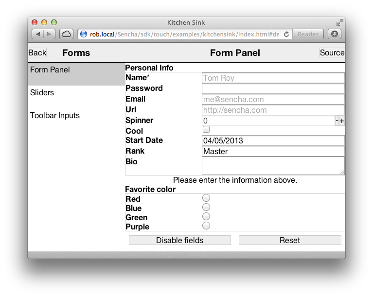
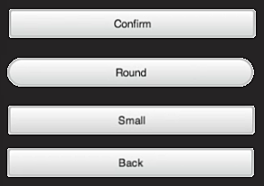
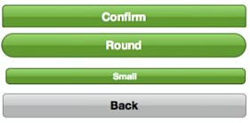
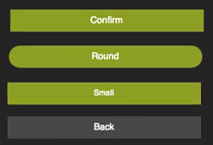
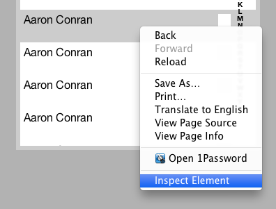
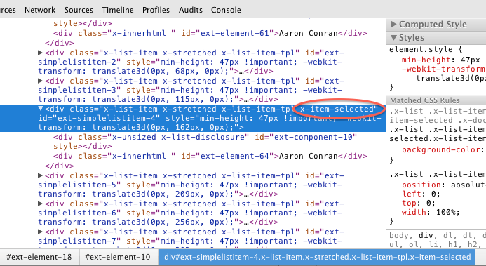
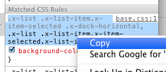

Theming
Many classes have shortcut names used when creating (instantiating) a class with a
configuration object. The shortcut name is referred to as an alias (or xtype if the
class extends Ext.Component). The alias/xtype is listed next to the class name of
applicable classes for quick reference.
Framework classes or their members may be specified as private or protected. Else,
the class / member is public. Public, protected, and private are access
descriptors used to convey how and when the class or class member should be used.
Public classes and class members are available for use by any other class or application code and may be relied upon as a stable and persistent within major product versions. Public classes and members may safely be extended via a subclass.
Protected class members are stable public members intended to be used by the
owning class or its subclasses. Protected members may safely be extended via a subclass.
Private classes and class members are used internally by the framework and are not intended to be used by application developers. Private classes and members may change or be omitted from the framework at any time without notice and should not be relied upon in application logic.
static label next to the
method name. *See Static below.Below is an example class member that we can disect to show the syntax of a class member (the lookupComponent method as viewed from the Ext.button.Button class in this case).
Let's look at each part of the member row:
lookupComponent in this example)( item ) in this example)Ext.Component in this case). This may be omitted for methods that do not
return anything other than undefined or may display as multiple possible values
separated by a forward slash / signifying that what is returned may depend on the
results of the method call (i.e. a method may return a Component if a get method calls is
successful or false if unsuccessful which would be displayed as
Ext.Component/Boolean).PROTECTED in
this example - see the Flags section below)Ext.container.Container in this example). The source
class will be displayed as a blue link if the member originates from the current class
and gray if it is inherited from an ancestor or mixed-in class.view source in the example)item : Object in the example).undefined a "Returns" section
will note the type of class or object returned and a description (Ext.Component in the
example)Available since 3.4.0 - not pictured in
the example) just after the member descriptionDefaults to: false)The API documentation uses a number of flags to further commnicate the class member's function and intent. The label may be represented by a text label, an abbreviation, or an icon.
classInstance.method1().method2().etc();false is returned from
an event handler- Indicates a framework class
- A singleton framework class. *See the singleton flag for more information
- A component-type framework class (any class within the Ext JS framework that extends Ext.Component)
- Indicates that the class, member, or guide is new in the currently viewed version
- Indicates a class member of type config
- Indicates a class member of type property
- Indicates a class member of type
method
- Indicates a class member of type event
- Indicates a class member of type
theme variable
- Indicates a class member of type
theme mixin
- Indicates that the class, member, or guide is new in the currently viewed version
Just below the class name on an API doc page is a row of buttons corresponding to the types of members owned by the current class. Each button shows a count of members by type (this count is updated as filters are applied). Clicking the button will navigate you to that member section. Hovering over the member-type button will reveal a popup menu of all members of that type for quick navigation.
Getting and setter methods that correlate to a class config option will show up in the methods section as well as in the configs section of both the API doc and the member-type menus just beneath the config they work with. The getter and setter method documentation will be found in the config row for easy reference.
Your page history is kept in localstorage and displayed (using the available real estate) just below the top title bar. By default, the only search results shown are the pages matching the product / version you're currently viewing. You can expand what is displayed by clicking on the button on the right-hand side of the history bar and choosing the "All" radio option. This will show all recent pages in the history bar for all products / versions.
Within the history config menu you will also see a listing of your recent page visits. The results are filtered by the "Current Product / Version" and "All" radio options. Clicking on the button will clear the history bar as well as the history kept in local storage.
If "All" is selected in the history config menu the checkbox option for "Show product details in the history bar" will be enabled. When checked, the product/version for each historic page will show alongside the page name in the history bar. Hovering the cursor over the page names in the history bar will also show the product/version as a tooltip.
Both API docs and guides can be searched for using the search field at the top of the page.
On API doc pages there is also a filter input field that filters the member rows using the filter string. In addition to filtering by string you can filter the class members by access level, inheritance, and read only. This is done using the checkboxes at the top of the page.
The checkbox at the bottom of the API class navigation tree filters the class list to include or exclude private classes.
Clicking on an empty search field will show your last 10 searches for quick navigation.
Each API doc page (with the exception of Javascript primitives pages) has a menu view of metadata relating to that class. This metadata view will have one or more of the following:
Ext.button.Button class has an alternate class name of Ext.Button). Alternate class
names are commonly maintained for backward compatibility.Runnable examples (Fiddles) are expanded on a page by default. You can collapse and expand example code blocks individually using the arrow on the top-left of the code block. You can also toggle the collapse state of all examples using the toggle button on the top-right of the page. The toggle-all state will be remembered between page loads.
Class members are collapsed on a page by default. You can expand and collapse members using the arrow icon on the left of the member row or globally using the expand / collapse all toggle button top-right.
Viewing the docs on narrower screens or browsers will result in a view optimized for a smaller form factor. The primary differences between the desktop and "mobile" view are:
The class source can be viewed by clicking on the class name at the top of an API doc page. The source for class members can be viewed by clicking on the "view source" link on the right-hand side of the member row.
Sencha Touch theming lets you group together CSS styles as a theme so that you can tailor your app's appearance to match the visual cues of a platform or operating system. In addition, theming provides access to icons as fonts, which lets you display and scale icons in your app quickly with reduced overhead on your app.
Sencha Touch contains the following themes:
These themes augment the existing standard Sencha Touch and Windows Phone themes.
For information on optimizing the use of themes in CSS, see 4 Tricks for Smaller CSS.
Sencha Touch lets you define platforms so that you can load resources in your application depending on the platform on which your app runs.
In the following example from an application's app.json file, the application loads the
sencha-touch.css file when the app runs on Chrome, Safari, iOS, Android, or Firefox:
"css": [
{
"path": "resources/css/sencha-touch.css",
"platform": ["chrome", "safari", "ios", "ios-classic", "android", "firefox"]
}
]
You can specify multiple platforms and use it to load JS resources. In this example, the
vendorfiles.js
resource loads when the platform is Chrome, Safari, or iOS:
"js": [
{
"path": "vendorfiles.js",
"platform": ["chrome", "safari", "ios", "ios-classic"]
}
]
Each loads only if the platform of the device running the app matches a platform you specify for the resource.
You can test this functionality by using the platform parameter in a URL:
http://localhost/sdk/touch/examples/kitchensink/index.html?platform=ie10
You can also detect which platform the device is running on from within your application
by using
platformConfig.
The list of available platforms are:
The following example shows an app.json CSS statement for the desktop, Windows, BlackBerry, Cupertino, CupertinoClassic, and MountainView themes:
"css": [
{
"path": "resources/css/sencha-touch.css",
"platform": ["desktop"],
"update": "delta"
},
{
"path": "resources/css/wp.css",
"platform": ["ie10"],
"theme": "Windows",
"update": "delta"
},
{
"path": "resources/css/cupertino.css",
"platform": ["ios"],
"theme": "Cupertino",
"update": "delta"
},
{
"path": "resources/css/cupertino-classic.css",
"platform": ["ios-classic"],
"theme": "CupertinoClassic",
"update": "delta"
},
{
"path": "resources/css/mountainview.css",
"platform": ["android"],
"theme": "MountainView",
"update": "delta"
},
{
"path": "resources/css/bb10.css",
"platform": ["blackberry"],
"theme": "Blackberry",
"update": "delta"
}
],
The platformConfig configuration lets you define values for a platform.
The config system in Sencha Touch is incredibly powerful and lets you quickly develop applications with lots of functionality. For more information about the config system, read the Class System guide.
The following example defines a new class Example.view.Login as a simple login form:
Ext.define('Example.view.Login', {
extend: 'Ext.panel.FieldSet',
config: {
title: 'Login'
},
platformConfig: [{
platform: 'ie10',
title: 'Microsoft Login'
}]
});
In this example, the value for the FieldSet title is specfied as Login, however by
using platformConfig, you can set the value of the title based on the platform - in this
case, ie10.
This is a very simple example. A more complex example would display your view differently, or change the items in your view, based on the platform you are running.
Themes are a set of CSS styles you can set
to change an application's appearance for a device or platform. You can reference the
styles
as resources in your app.json file for your application.
Getting Started
Sencha Touch provides these themes:
To code a theme, use Compass and Sass, which are provided when you install Sencha Cmd.
In the following example, the Cupertino theme loads only when the platform is iOS. When
the iOS platform loads,
your app knows that the current theme is Cupertino:
"css": [
{
"path": "resources/css/sencha-touch.css",
"platform": ["ios"],
"Theme": "Cupertino"
}
]
Within your application, you can access a theme name by using Ext.theme.name.
If you do not define a theme, the theme name is Default.
You can test themes by using the theme parameter in the URL when running your app:
http://localhost/sdk/touch/examples/kitchensink/index.html?theme=Apple
Important: The framework uses the Windows and Blackberry themes to change the
functionality of the framework if that theme is in use. If you want to replicate that functionality,
and you intend to use either the Windows or Blackberry themes, you should also use those names.
There were many changes from Sencha Touch 2.1 to 2.2, but the upgrade path is rather simple.
The most important change to be aware of is the move away from using mixins for each component.
We found that using mixins for each component was quite slow when compiling your Sass,
so we decided to simply move to using @import to just include each component.
Before your stylesheet would have looked like this:
@import 'sencha-touch/default/all';
@include sencha-panel;
@include sencha-buttons;
// and other components…
But in Touch 2.2 it looks like this:
@import 'sencha-touch/default';
@import 'sencha-touch/default/Panel';
@import 'sencha-touch/default/Button';
// and other components
Instead of using @include to include a component mixin, use @import to import the
component.
If you want to include all default components in Sencha Touch 2.2, you can use the following code:
@import 'sencha-touch/default';
@import 'sencha-touch/default/all';
However you may want to import from a separate file that includes these imports as described in 4 Tricks for Smaller CSS.
The same goes for when you are using other themes.
Windows:
@import 'sencha-touch/windows';
@import 'sencha-touch/windows/all';
BlackBerry:
@import 'sencha-touch/bb10';
@import 'sencha-touch/bb10/all';
To include only the base theme:
@import 'sencha-touch/base';
@import 'sencha-touch/base/all';
The base theme does not have styling like the Default, Cupertino, Mountain View, Windows, and BlackBerry themes.
Sencha Touch 2.2 introduced the base theme, which is essentially the required styling to lay out components of Sencha Touch. There are no colors or custom styling like gradients and margins and padding. It is simply the starting point of actual themes.
Developing themes for Sencha Touch was made simple with the use of Sass, Compass and their features. This lets you dynamically change colors and measurements using variables, and create new UIs by using mixins. This rapidly speeds up development of custom themes based on the default Sencha Touch theme.
In previous Touch versions, if you wanted to create highly customized themes, you had to
override a lot of the styling of the Default theme by using lots of hacks like !important.
Advantages of the new base theme:
No layouts for Sencha Touch components. These are already handled for you in the base. All you have to do is style a component for how you want it.
No overriding default styles, because there are none. The base theme only lays out components, which means it is actually usable. You need to build on the base theme to style it, but there is no longer any need to use hacks to remove the existing styling. Which in turn, reduces the file style of your CSS because you no longer have all that default styling.
Faster CSS compiles. Along with reduced size, themes provide faster compile times. Sencha Touch uses Compass to compile stylesheets from Sass to CSS. In older Sencha Touch versions, Compass could take multiple seconds to compile because it had to compile the default theme along with all your custom styling.
Now that the base is separate, you only have to compile your custom styling - which means compiling themes has dropped to fractions of seconds. This makes writing stylesheets much quicker.

The following illustrates differences in buttons for the BlackBerry, Cupertino, and MountainView themes. For a complete list of each theme, see the KitchenSink example.
| BlackBerry Theme | Cupertino Theme | Mountain View Theme |
|---|---|---|
|  |  |  |
Using one of the default themes in your Sencha Touch application is simple.
Just include the appropriate theme stylesheet into your app.json file:
"css": [
{
"path": "resources/css/wp.css",
"update": "delta"
}
]
This example includes only the Windows theme in the wp.css file. Ensure that the path points to the correct stylesheet within the SDK folder.
If you want to load different themes depending on the platform, include them in your
app.json file:
"css": [
{
"path": "resources/css/sencha-touch.css",
"platform": ["chrome", "safari", "ios", "android", "firefox"],
"theme": "Default",
"update": "delta"
},
{
"path": "resources/css/wp.css",
"platform": ["ie10"],
"theme": "Windows",
"update": "delta"
},
{
"path": "resources/css/bb10.css",
"platform": ["blackberry"],
"theme": "Blackberry",
"update": "delta"
}
]
In this example, the Windows theme loads on the "ie10" platform and the BlackBerry theme loads on "blackberry".
All other devices uses the Default Sencha Touch theme.
Extending one of the default themes in Sencha Touch is also simple.
To set up a custom theme:
Open your resources/sass/app.scss stylesheet which is automatically generated when
creating an application using Sencha Cmd.
Include the Sencha Touch theme you want. This example uses the default theme:
@import 'sencha-touch/default';
@import 'sencha-touch/default/all';
Or the Windows theme:
@import 'sencha-touch/windows';
@import 'sencha-touch/windows/all';
Add your custom Sass styles.
Compile and launch your application:
compass compile resources/sass
Creating a new theme is very similiar to extending a default theme, except that you only want to include the base theme.
To create a new theme:
Open your resources/sass/app.scss stylesheet which is automatically generated when
creating an application using Sencha Cmd.
Include the Sencha Touch base theme:
@import 'sencha-touch/base';
@import 'sencha-touch/base/all';
Now you can write the custom Sass required to theme your app.
Sencha Touch components always have a baseCls that matches the name of the component. Some example of this are:
Ext.List -> .x-listExt.field.Text -> .x-field-textExt.field.Numer -> .x-field-numberExt.panel.Form -> .x-form-panelIf you are not familiar with the DOM structure of Sencha Touch applications, use the Web Inspector of your browser to inspect the DOM to determine what elements you need to style.
You can also use the Web Inspector to detect what the base theme uses as selectors:
Navigate to a list example with just the base theme
Select a list item and open it in the Web Inspector

Navigate the DOM until you see the selected class 'x-item-selected' (it may even be the select DOM element)

Use the styles panel to see and copy the selector used in the base theme.

Paste the selector into your app.scss file and style as needed:
.x-list .x-list-item.x-item-selected .x-dock-horizontal,
.x-list .x-list-item.x-item-selected.x-list-item-tpl {
color: red;
}
The List component in Sencha Touch has been optimized to ensure performance is best in every scenario.
Lists now have these modes:
Unfortunately this means that the DOM structure of list items can change depending on the mode the list is running. Therefore if you have custom styling on lists or list items, change the selectors to match the new selectors.
One element of themes in Sencha Touch 2.2 is the new use of icons as fonts. Previously, scaling icons required a great deal of overhead where the application had to draw the picture for the icon and then redraw, rescale, and change it as the app appeared on different browsers and devices.
New in Touch 2.2, icons are now handled as fonts, which enables very fast scaling without the need to redraw the picture. Icons appear on buttons and tabs.
To convert your existing icons to fonts, you can use Pictos Server, Pictonic, icomoon.io, or http://fontstruct.com/ — some of these are free or available with trial subscriptions.
The Pictos font provides a large collection of free icons. You can find a full list of characters available for the Pictos font at http://www.pictos.cc. Sencha Touch provides free access to the Pictos Font Pack.
When you build your application using Sencha Cmd, the font libraries are copied to your application file.
Just like Sencha Touch 1 and 2, Sencha Touch 2.2 and later maps icon names to actual icons so you can use them within your application:
{
xtype: 'button',
iconCls: 'home',
title: 'Home'
}
For a full list of iconCls functions that are available, refer to the Ext.Button class
documentation.
Alternatively, you can use the Compass icon mixin to map a specific character of the icon font to an iconCls which you can use in your app:
@include icon('home', 'H');
The Pictos font is not the only font you can use in your application. If you know of another font or you have custom converted your icons to fonts, it is very easy to use that font with the icon mixin.
Just like with the Pictos font, you need to specify the iconCls and character to be used for the icon. Additionally, you need to specify the name of the icon font, which needs to match the font family of the icon font you have, plus you need to make sure the font has been included in your CSS using the icon-font mixin.
This example specifies the Home icon in the custom MyFont:
@include icon('home', 'H', 'MyFont');
The following example shows how to include the Pictos font using the icon-font mixin:
@include icon-font('Pictos', inline-font-files('pictos/pictos-web.woff', woff, 'pictos/pictos-web.ttf', truetype,'pictos/pictos-web.svg', svg));
The first parameter is the name of the font face, which must match the name you use as the CSS font-family. The second parameter uses the inline-font-files Compass function to base64-encode the font file inline into the CSS file with paths to the WOFF, TTF, and SVG versions of the font files.
A good list of other icon fonts (some paid and some free) is available at http://css-tricks.com/flat-icons-icon-fonts/
Sencha Touch 1 and 2 used -webkit-maask to display and style fonts.
Unfortuantely, although webkit-mask functionality works on most WebKit browsers,
it does not work on non-WebKit browsers like Internet Explorer.
Sencha Touch fully supports IE10, so webkit-mask is no longer an option as of Sencha
Touch 2.2+.
There are many tools available online to create your own icon font. A good example of this is icomoon.
Advantages of creating your own icon font:
As of Sencha Touch 2.2.x webmasks for icons are no longer supported. Instead Touch now uses the much more flexible and faster webfonts. Configuring your application with new icons using Webfonts is simple.
Create your own webfont file in WOFF, truetype, or SVG format. Sites like fontello
let you select,create, and download your custom webfont file.Put your webfont in the default
location of the resources/sass/stylesheets/fonts/ directory.
Include the webfont file into this Sass file using the @include icon-font mixin statement. Once downloaded, incorporate the font file into your Compass files using the @font-face mixin:
@include font-face('_fontName_', inline-font-files(['_filename_', _filetype_]*));
Where:
woff, ttf, or svg values.Define your icon class names found in your font file using the @include icon mixin
statement. Once added to this Compass file,define a name for each icon within the file
using a unique name to access the icon.Using the icon mixin you define the icon:
@include icon('_iconName_', '_index_', '_fontName_');
Where:
Compile your Compass files from the directory that this file found using thecompass compile command
Example:
If you use an online service to create and download yourown webfont file, this example shows
the commands to insertin the app.scss file in your project to addand utilize fonts found in a font file
named resources/sass/stylesheets/fonts/myfonts/myFonts.woff under your app directory:
@include font-face('myFonts', inline-font-files('myfonts/myFonts.woff', woff));
@include icon('house', '\002', 'myFonts');


 Sencha Touch | Terms of Use
Sencha Touch | Terms of Use